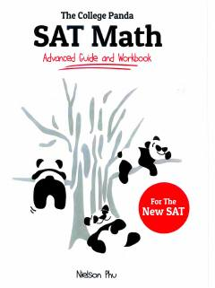

SMSAT matematika imtihoni uchun ilg'or qo'llanma va amaliy ishchi daftar.
Ushbu qo'llanma SAT imtihonining matematika qismiga tayyorgarlik ko'rayotgan o'quvchilar uchun mo'ljallangan bo'lib, ilg'or mavzular va amaliy mashqlarni o'z ichiga oladi. Kitobda murakkab masalalarni yechish usullari va tushunarli tushuntirishlar batafsil yoritilgan. Muallif NielSon Phu o'quvchilarga imtihonda yuqori natija ko'rsatish uchun zarur bo'lgan strategiyalarni taqdim etadi.